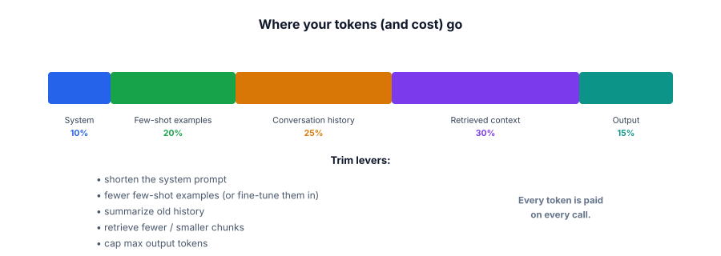

Budgeting tokens
Every request pays for every token in it, every single time.
A request is made of parts: instructions, examples, chat history, retrieved documents and the answer.
A token budget means counting each part, finding the biggest one and trimming that first.
Small cuts add up fast, because they repeat on millions of calls.
Agents need extra care, because their history grows on every step.
Think of a phone plan with a monthly data limit. Before you cut anything, you open the usage screen and see that one app used 80% of it. Deleting a tiny app you barely use would save nothing; turning off autoplay videos in the big one fixes the bill. Token budgeting is the same: open the usage screen first, then cut the biggest item.
| In the picture | In the real system |
|---|---|
| The phone's data-usage screen | Measuring tokens per part of the prompt |
| The one app using 80% of the data | The biggest part, often retrieved context or history |
| Turning off autoplay in that app | Summarise history, retrieve less, cap the output, cache the fixed prefix |
| The monthly limit resetting | Only per request: an agent's history keeps growing within one task |
Where the picture breaks. A phone plan resets each month, while an agent's history keeps growing inside a single task, so the biggest item can change halfway through.
Drag each part of the request and pick a model. The bars and the cost per request and per 1 million requests are recomputed from the list prices.
Going deeper
Caching skips calls, routing right-sizes them, batching speeds the hardware — but every call you do make still spends tokens, on every request, forever. Token budgeting is the most universal lever: make each prompt as lean as it can be, and you pay less on literally every call.
Every token is paid, every time
Because cost and latency both scale with tokens (Lesson 8.1), the size of your prompt and answer is a per-request tax you pay endlessly. A bloated prompt — a giant system message, a dozen few-shot examples, an over-long conversation history, too much retrieved context — multiplies across every call and every user. Token budgeting is treating your token usage like a budget: knowing where the tokens go, and trimming the fat without losing quality.

A token budget is a deliberate accounting of how many tokens each part of your request uses: the system prompt, any few-shot examples, the conversation history, retrieved context (in RAG), and the output. You measure each part, find the biggest, and trim it — with levers like shortening instructions, using fewer examples (or fine-tuning them in), summarizing old history, retrieving less, and capping max output tokens.
Count each component so you know where to cut — guessing wastes effort on the wrong part.
import tiktoken
enc = tiktoken.get_encoding("cl100k_base")
def n(text): return len(enc.encode(text))
parts = {
"system": n(system_prompt),
"examples": sum(n(e) for e in few_shot),
"history": sum(n(m) for m in conversation),
"context": sum(n(c) for c in retrieved_chunks),
}
for name, count in sorted(parts.items(), key=lambda kv: -kv[1]):
print(f"{name}: {count} tokens") # attack the biggest first
# context: 2400 history: 1800 examples: 700 system: 250 → trim context + history
# Cheap wins:
# - cap output: max_tokens=300 (don't let it ramble)
# - trim history: keep last N turns + a running summary (Track 4.5)
# - retrieve less: top-3 instead of top-10, smaller chunks (Track 3)The measurement is the point: people often “optimize” the system prompt while a 2,400-token retrieved-context blob is the real cost. Measure first, cut the biggest, re-measure.
Assumptions (ours): 30,000 tasks a day on claude-sonnet-5-5 ($2 / $10 per million, cache reads $0.10/M per Anthropic prompt caching docs). Each task runs 8 model calls. Fixed prefix: 1,200-token system prompt + 2,500 tokens of tool definitions = 3,700. Each step appends 800 tokens of tool output and 150 tokens of model reply; output per call is 150 tokens.
- Input per call. Call k sends 3,700 + 950 x (k - 1). Sum over 8 calls: 8 x 3,700 + 950 x (0+1+...+7) = 29,600 + 950 x 28 = 56,200 input tokens a task. Output: 8 x 150 = 1,200.
- Baseline cost. 56,200 x $2/M + 1,200 x $10/M = $0.1124 + $0.012 = $0.1244 a task, $3,732 a day. Note output is under 10% here: this is an input-shaped bill.
- Trim tool output. Have tools return a 150-token summary instead of 800 raw tokens, so each step adds 300. Input: 29,600 + 300 x 28 = 38,000. Cost: $0.076 + $0.012 = $0.088, $2,640 a day.
- Cache the fixed prefix. The 3,700-token prefix is the same on every call of every task, so it stays warm. Prefix: 8 x 3,700 x $0.10/M = $0.00296. Growing part: 8,400 x $2/M = $0.0168. Output $0.012. Total $0.0318 a task, $953 a day, a 74% cut from baseline with no change to what the model sees.
- Cap the loop. A step budget of 8 with repeated-call detection stops runaway tasks; one task that loops 40 times costs about $1.84 under the baseline formula (889,000 input tokens), as much as 15 normal tasks.
- Verify quality. Run the golden set before and after the tool-output summaries. Trimming is a behaviour change; caching is not.
- Every token is paid on every call — prompt size is a per-request tax that multiplies at scale.
- Account for where tokens go (system, examples, history, context, output) and trim the biggest.
- Levers: shorter system prompt, fewer examples (or fine-tune them in), summarized history, leaner retrieval, capped output.
- Output tokens are doubly costly (price + decode latency) — cap them deliberately.
- Measure first — don’t trim the part that isn’t the problem.
Your costs are high. You spend an afternoon tightening the system prompt from 300 → 180 tokens, but the bill barely moves. A trace shows each call also sends 2,400 tokens of retrieved context and 1,800 of history. What should you have done?
A chat feature sends short prompts (about 300 tokens) and gets long replies (about 900 tokens). What's usually the biggest cost lever here?
In an agent where every step re-sends the full history, which change usually cuts input tokens the most over a long task?
1. Why is capping max_tokens on the output a double win compared to trimming input?
2. Your agent’s cost grows over a long task. Which component is likely ballooning, and what fixes it?
3. You use 8 few-shot examples (1,000 tokens) on every call. Give two ways to reduce that cost.
▸ Show solutions & reasoning
1. Output tokens cost on both axes: they’re usually the higher-priced tokens and each one adds decode time (Lesson 8.1). So capping output saves money and latency, whereas trimming input mainly saves money and TTFT. (Trim both, but a runaway-length answer is especially worth capping.)
2. The conversation/agent history — each step re-sends a growing transcript, so input tokens climb every call (Lesson 8.1, Track 4.5). Fix it with memory management: keep the last few turns plus a running summary of older ones, and drop or retrieve-on-demand the rest, so the per-call token count stays bounded instead of growing without limit.
3. (a) Use fewer examples — test whether 3 well-chosen examples match 8’s quality (often they do), saving most of the 1,000 tokens per call. (b) Fine-tune the behavior in (Track 5): bake the examples’ pattern into the weights so you can drop them from the prompt entirely — a one-time training cost to stop paying 1,000 tokens on every single call. (Also: dynamic/retrieved few-shot, selecting only the most relevant example per query.)
Token budgeting feels small per call and is enormous in aggregate, which is exactly why it’s the most universally-applied serving optimization. Trim 500 tokens from a prompt that runs ten million times a month and you’ve saved five billion tokens a month, every month, on top of faster responses — and you did it once. This compounding is why disciplined teams keep prompts ruthlessly lean: it’s free money that recurs. It also reframes some earlier-track decisions through a cost lens: every few-shot example you add (Track 2) is a permanent per-call tax, which is one reason fine-tuning to shrink prompts (Track 5) can pay for itself; every extra retrieved chunk (Track 3) costs tokens forever, which is another reason to retrieve precisely rather than dumping context.
Two cautions keep it from becoming penny-wise-pound-foolish. First, don’t trim into a quality regression — cutting the example or context the model actually needed costs you more in wrong answers than you saved in tokens, so every trim is a change you validate against your eval set (Track 6), watching quality as you cut.
Second, measure, don’t guess: instrument your requests (Track 6 tracing) to see the real token breakdown, because intuition about where tokens go is often wrong (people obsess over the system prompt while context dominates). The mature loop is: measure the token budget per request → trim the biggest component → confirm quality held → re-measure.
Do that, and token budgeting becomes a precise, ongoing optimization rather than blind cutting — and combined with caching, routing, and (if self-hosting) quantization and batching, it’s how you take a feature that worked in a demo and make it cheap and fast enough to serve millions.
You now have the full serving toolkit — cost, latency, and the levers for both. Time to pressure-test it. On to the Track 8 interview check.
labs/08_llmops.pyFree and offline once set up: Ollama with qwen2.5:7b, plus the packages in labs/README.md. From the course folder:
python labs/08_llmops.pyWhat to look for: Section 3 sums tokens and hosted-equivalent cost across the requests that reached the model (prices set at the top of the file from Claude Haiku 5.5 list prices) and scales it to 2 M requests a day; each span in traces.jsonl also carries its own token counts and cost. Shorten the prompt template and rerun: the cost falls by exactly the removed tokens times the price. The lab does not simulate an agent's growing history; use the worked example's arithmetic for that.
Small samples: these labs use 5 to 20 cases so they run in minutes on a laptop. Where they report a rate, they print n and a 95% Wilson interval. Read them as a demonstration of the mechanism, not as a measured rate for your system; for that you need hundreds of cases and several seeds.
▸ Recorded output (our run, 2026-11-03, qwen2.5:7b on a laptop GPU)
semantic similarity to the cached 'track my order': paraphrase=0.657 different intent (cancel)=0.523
semantic hits at threshold 0.9: 0
Look: a threshold low enough to catch the paraphrase would sit close to the wrong-intent score.
Serving 'how to track' to someone who asked 'how to cancel' is worse than a cache miss. Tune the
threshold on labelled pairs, scope caches per intent/tenant, and log every semantic hit for review.
traces written to traces.jsonl; first span:
{"trace_id": "54d669838c1f47758c9099aba0110b3f", "name": "chat qwen2.5:7b", "gen_ai.operation.name": "chat", "gen_ai.provider.name": "ollama", "gen_ai.request.model": "qwen2.5:7b", "gen_ai.prompt.name": "support_answer", "gen_ai.prompt.version": 2, "prompt.hash": "5ab3d11ffb3b", "user.id": "u-123",
4) Prompt version rollout: v1 vs v2 on the same question, both traced
v1 hash=47ed77f326d6 -> "Yes, you can return innerwear as long as it meets your retailer's return policy conditions, such as being unus"
v2 hash=5ab3d11ffb3b -> 'Please contact support for specific return policies on innerwear.'
Check the facts too: store policy (labs/data/kb.json, ret-01) says innerwear cannot be returned. Neither
prompt has retrieval, so any 'yes' is a hallucination; the version that defers to support is the safer one.
Look: the trace links every answer to an exact prompt hash and model, so a bad answer is debuggable,
and a rollout is a registry change you can roll back, not a code edit buried in a deploy.Your numbers will differ a little run to run. Full log: labs/outputs. Source: labs/08_llmops.py.
Warm-up. A prompt has: system 400, few-shot examples 1,600, history 900, retrieved context 3,000, question 100 tokens. Which two parts do you attack first, and what is the share of each?
▸ Solution
Total 6,000. Context 3,000 (50%) and few-shot 1,600 (27%). Retrieve fewer or smaller chunks, and test whether 2-3 examples (or selecting examples per query) match 8 examples on the golden set. The system prompt is under 7%; polishing it first is the classic mistake.
Transfer. You set max_tokens = 300 on a feature to cap output. A week later 12% of responses end mid-sentence. What happened and what is the right fix?
▸ Solution
max_tokens is a hard stop, not a length instruction. The model does not plan to finish within it; it is just cut off, and the finish reason says so (max_tokens or length, depending on the API). Right fix: tell the model the target length in the prompt ('answer in at most 120 words'), keep max_tokens as a safety ceiling with some margin above the target, and monitor the share of responses stopped by the limit. If it stays above about 1%, either raise the ceiling or tighten the instruction.
Stretch. Prove that if each agent step adds d tokens to the history, the total re-sent history over n steps is d x n(n-1)/2, and compute how much a 4x reduction in d saves at n = 20 and d = 1,000.
▸ Solution
Step k re-sends (k-1) x d history tokens. Summing k = 1..n gives d x (0+1+...+(n-1)) = d x n(n-1)/2. At n = 20, d = 1,000: 1,000 x 20 x 19 / 2 = 190,000 tokens a task. With d = 250: 47,500 tokens. Saving 142,500 input tokens a task, $0.285 a task on a $2/M model. Quadratic growth is why long agents need summarised memory, and why the same trim saves far more at n = 20 than at n = 5 (where the saving would be only 7,500 tokens).
Junior What goes into a token budget for a single LLM request?
▸ Model answer
Every part of the input plus the output: the system prompt, tool or function definitions, few-shot examples, conversation history, retrieved context, the user's message, and the answer. I measure each part with the model's own tokenizer and log the breakdown per request, so I can see which part is biggest. Then I set limits: a cap on retrieved chunks, a rule for summarising history after N turns, and a max_tokens ceiling with a length instruction in the prompt. The goal is lean prompts without losing the context the model really needs.
Mid How do you keep conversation history from blowing the budget in a long chat?
▸ Model answer
I keep the last few turns verbatim and replace older turns with a running summary that a cheap model updates every few turns. Facts that must survive, like the user's order number, go into a small structured memory instead of free text. For very long sessions I retrieve older turns on demand by similarity rather than sending everything. Then I measure: tokens per turn should flatten instead of growing linearly, and the golden set should include long conversations to make sure the summary does not drop details users later refer back to.
Senior How would you enforce token budgets across 20 product teams sharing one LLM platform?
▸ Model answer
Make it visible, then make it enforceable. Every call goes through a gateway that tags team, feature and prompt version, records input, cached, and output tokens, and prices them. Each team gets a dashboard of cost per task and a monthly budget with alerts at 80%. The gateway enforces hard limits per feature: max input size, max_tokens ceilings, step budgets for agents, and rate limits. Platform-level savings like prompt caching and batch routing are on by default. A design review for any new feature includes a token estimate per task, and actuals are compared with it after launch.
In one line: Measure where your tokens go, then cut the biggest part first.